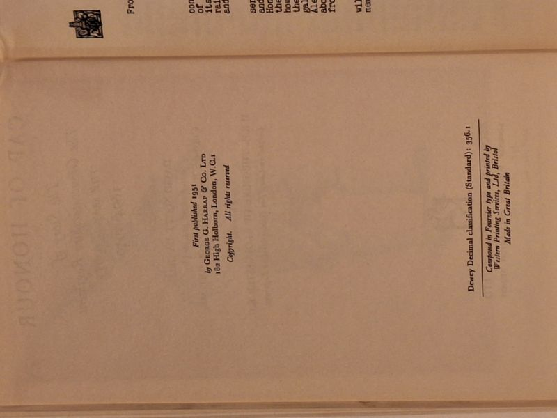

Cap of Honour: The Story of The Gloucestershire Regiment (The 28th/61st Foot) 1694-1950
David Scott Daniell · George G. Harrap & Co Ltd, London, 1951

C$35 · Very Good condition
Stated First Edition: 'First published 1951 by George G. Harrap & Co. Ltd, 182 High Holborn, London.' Foreword by H.R.H. The Duke of Gloucester K.G., Colonel-in-Chief of The Gloucestershire Regiment. Material provided by Colonel R. M. Grazebrook, O.B.E., M.C. Color frontispiece of a Soldier of the 28th Foot, 1745. Hardcover with original unclipped dust jacket. Provenance: ink inscription on the free endpaper reading 'Washington, D.C. January 1965' (signature illegible) and a faint pencil price '£1' on the front pastedown. Jacket shows light edge wear; boards clean; tight binding; no foxing.
Details
- Publisher: George G. Harrap & Co Ltd, London, 1951
- Binding: Hardcover
- Edition: First Edition
- Condition: Very Good
- Dust jacket: Very Good
- Category: Military